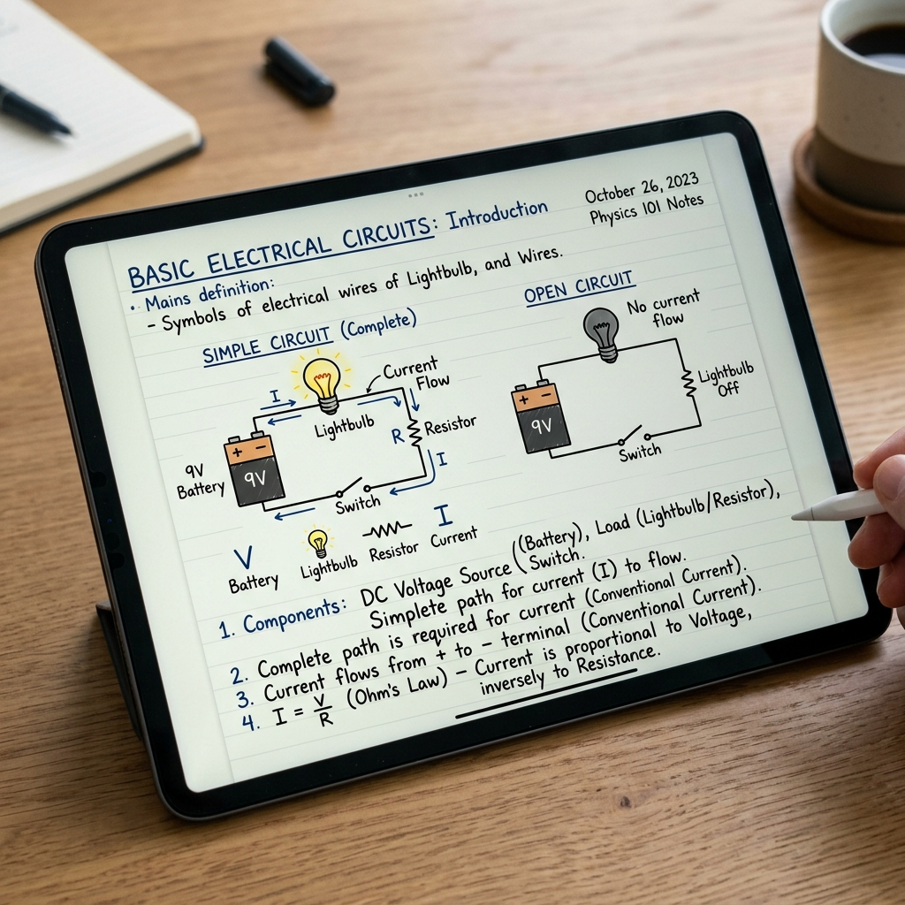

What This Stage Was About
This first stage introduced my student to the basic ideas behind electrical circuits. Before using simulations or hands‑on tools, we explored circuits through a mix of BBC Bitesize articles, videos, mini‑games, and quizzes, along with the Bill Nye Electricity episode. These resources gave him multiple ways to understand the same ideas — reading, watching, interacting, and testing his knowledge — which helped build confidence before moving into more complex tools.
Alongside these digital resources, he took notes in his digital notebook, using the Kindle Scribe to handwrite diagrams and vocabulary. This let him sketch naturally while still staying in a fully digital workflow.
Lesson Plan
Digital Tools We Used
Kindle Scribe PICRAT: Passive–Replacement
Used to take notes, draw simple diagrams, and record observations.
Student Artifacts

What We Did
- learned the parts of a circuit
- practiced identifying open and closed circuits
- explored how switches control the flow of electricity
- discussed safety and proper handling of components
My Reflection
He quickly grasped the core ideas and showed curiosity about how circuits power real‑world devices.
Student Reflection
“I liked learning how electricity moves and how switches work.”
ISTE Standards Addressed
1.1 Empowered Learner
The student used BBC Bitesize and the Bill Nye video as digital learning tools they could pause, replay, and navigate with support. This helped them build confidence using online resources and take more ownership of how they learned the foundational electricity concepts.
1.3 Knowledge Constructor
The student gathered information from multiple digital sources—four BBC Bitesize lessons and the Bill Nye video—and synthesized what they learned through discussion, quick checks, and diagram interpretation to form a clear, accurate understanding of how electricity works.